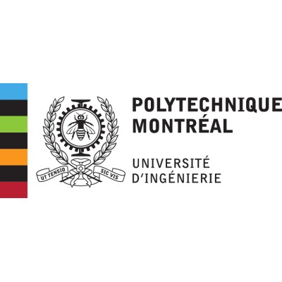

ROOT-CAUSE ANALYSIS
AgentDebug
Collaborative, empirically grounded reasoning for root-cause analysis in microservice systems using operational evidence.
SOFTWARE ENGINEERING RESEARCHER
Understanding complex systems and behaviours, making systems more reliable.
I am a postdoctoral fellow at the University of Ottawa, working with Lionel C. Briand at Nanda Lab. My research brings together software observability, AIOps, and agentic software engineering to diagnose failures and improve the reliability of complex software systems.
I completed my PhD in February 2025 at the University of Alberta in the Software Engineering and Intelligent Systems program, focusing on AIOps and performance engineering. My doctoral thesis explored anomaly detection and root cause localization in microservices using distributed traces and profiling metrics.
I am drawn to the challenge of bringing multiple sources of evidence together to understand systems, reason about their behavior, and improve their performance and reliability. My research connects operational evidence with AI to support more effective failure diagnosis, software debugging, and automated software engineering.
ROOT-CAUSE ANALYSIS
Collaborative, empirically grounded reasoning for root-cause analysis in microservice systems using operational evidence.
AI-ASSISTED REPAIR
Specialized agents for repairing AI-generated test cases in CI/CD environments.
EMPIRICAL SOFTWARE ENGINEERING
Studying whether AI-generated code follows human observability practices.
Using distributed traces, metrics, and logs to detect anomalies and understand the behavior of microservice systems.
Identifying root causes of performance degradation through contextual analysis and interpretable diagnostic evidence.
Exploring how large language models can support fault localization, software repair, and reasoning about failures.
SPARK · *Equal contribution.
Vision paper · pp. 1312–1316
Industry paper · pp. 496–506
Research paper · pp. 96–107
Position paper · pp. 62–68
Combining observability data with contextual analysis to localize performance root causes in microservices.
Detecting abnormal microservice behavior using request execution paths and profiling data.
Work in progress · pp. 1–6
Data challenge paper · pp. 62–66
Software and Systems Modeling · 20, pp. 1491–1523
Automated Software Engineering · 25(3), pp. 531–568
University of Ottawa · Nanda Lab (May 2025–present)
Leading research on AI-assisted fault localization, automated test repair, and performance diagnosis, including collaboration with a large industrial partner.
Concordia University (Dec. 2024–Apr. 2025)
AIOps & Software Observability Research and Technology Lab, with Abdelwahab Hamou-Lhadj.
University of Alberta (2025)
Research in AIOps, supervised by James Miller and Abdelwahab Hamou-Lhadj.
Read my doctoral thesis ↗
Polytechnique Montréal · SAET Research Lab (Apr.–Aug. 2022)
Worked with Mohammad Hamdaqa on AIOps for Digital Twin applications, supported by a competitive POINT Scholarship.
CONNECT